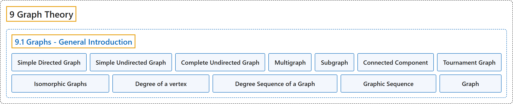

9.1 Graphs - General Introduction
Classification

Glossary
| Term | Definition | 中文翻译 | Source |
|---|---|---|---|
| 9.1 Graphs - General Introduction 图：概述 |
(No definition) | （无定义） | Doerr & Levasseur, n.d., section 9.1 |
| Simple Directed Graph 简单有向图 |
"A simple directed graph consists of a nonempty set of vertices, \(V\text{,}\) and a set of edges, \(E\text{,}\) that is a subset of the set \(V \times V\text{.}\)" | 简单有向图由非空顶点集 \(V\)， 和边集 \(E\)， 组成，其中 \(E\)， 是集合 \(V \times V\)。 的子集。 | Doerr & Levasseur, n.d., Definition 9.1.1 |
| Simple Undirected Graph 简单无向图 |
"A simple undirected graph consists of a nonempty set \(V\text{,}\) called a vertex set, and a set \(E\) of two-element subsets of \(V\text{,}\) called the edge set." | 简单无向图由称为顶点集的非空集合 \(V\)， 和 \(V\)， 的若干二元子集构成的集合 \(E\) 组成，\(E\) 称为边集。 | Doerr & Levasseur, n.d., Definition 9.1.5 |
| Complete Undirected Graph 完全无向图 |
"A complete undirected graph on \(n\) vertices is an undirected graph with the property that each pair of distinct vertices are connected to one another. Such a graph is usually denoted by \(K_n\text{.}\)" | \(n\) 个顶点上的完全无向图是具有如下性质的无向图：每一对不同的顶点都彼此相连。这样的图通常记作 \(K_n\)。 | Doerr & Levasseur, n.d., Definition 9.1.10 |
| Multigraph 多重图 |
"A multigraph is a set of vertices \(V\) with a set of edges that can contain more than one edge between the vertices." | 多重图是顶点集 \(V\) 连同一个边集，该边集可以在顶点之间含有多于一条边。 | Doerr & Levasseur, n.d., Definition 9.1.11 |
| Subgraph 子图 |
"Let \(G=(V,E)\) be a graph of any kind: directed, directed multigraph, or undirected. \(G'=(V',E')\) is a subgraph of \(G\) if \(V' \neq \emptyset\text{,}\) \(V' \subseteq V\) and \(e \in E'\) only if \(e \in E\) and the vertices of \(e\) are in \(V'\text{.}\) You create a subgraph of \(G\) by removing zero or more vertices and all edges that include the removed vertices and then you possibly remove some other edges." | 设 \(G=(V,E)\) 为任意一种图：有向图、有向多重图或无向图。若 \(V' \neq \emptyset\)，\(V' \subseteq V\)，且仅当 \(e \in E\) 且 \(e\) 的顶点在 \(V'\)。 中时 \(e \in E'\)，则 \(G'=(V',E')\) 是 \(G\) 的子图。要得到 \(G\) 的子图，可以删去零个或多个顶点以及所有含被删顶点的边，然后再可能删去其他一些边。 | Doerr & Levasseur, n.d., Definition 9.1.17 |
| Connected Component 连通分量 |
"Given a graph \(G=(V,E)\text{,}\) let \(C\) be the relation “is connected to” on \(V\text{.}\) Then the connected components of \(G\) are the induced subgraphs of \(G\) each with a vertex set that is an equivalence class with respect to \(C\text{.}\)" | 给定图 \(G=(V,E)\)，设 \(C\) 为 \(V\)。 上的关系“与……相连”。则 \(G\) 的连通分量是 \(G\) 的导出子图，其顶点集是关于 \(C\) 的一个等价类。 | Doerr & Levasseur, n.d., Definition 9.1.20 |
| Tournament Graph 竞赛图 |
"A tournament graph is a directed graph with the property that no edge connects a vertex to itself, and between any two vertices there is at most one edge." | 竞赛图是有向图，具有如下性质：没有边把顶点连到它自身，且任意两个顶点之间至多有一条边。 | Doerr & Levasseur, n.d., Definition 9.1.25 |
| Isomorphic Graphs 同构图 |
"Two graphs \((V, E)\) and \((V', E')\) are isomorphic if there exists a bijection \(f:V\to V'\) such that \(\left(v_i,v_j\right)\in E\) if and only if \(\left(f\left(v_i\right),f\left(v_j\right)\right)\in E'\text{.}\) For multigraphs, we add that the number of edges connecting \(v_i\) to \(v_j\) must equal the number of edges from \(f\left(v_i\right)\) to \(f\left(v_j\right)\text{.}\)" | 若存在双射 \(f:V\to V'\)，使得 \(\left(v_i,v_j\right)\in E\) 当且仅当 \(\left(f\left(v_i\right),f\left(v_j\right)\right)\in E'\)，则两个图 \((V, E)\) 和 \((V', E')\) 同构。对于多重图，我们补充：连接 \(v_i\) 与 \(v_j\) 的边数必须等于从 \(f\left(v_i\right)\) 到 \(f\left(v_j\right)\)。 的边数。 | Doerr & Levasseur, n.d., Definition 9.1.31 |
| Degree of a vertex 顶点的度 |
"Let \(v\) be a vertex of an undirected graph. The degree of \(v\text{,}\) denoted \(deg(v)\text{,}\) is the number of edges that connect \(v\) to the other vertices in the graph." | 设 \(v\) 为无向图的顶点。\(v\) 的度，记作 \(deg(v)\)，是图中连接 \(v\) 与其他顶点的边数。 | Doerr & Levasseur, n.d., Definition 9.1.32 |
| Degree Sequence of a Graph 图的度序列 |
"The degree sequence of a simple undirected graph is the non-increasing sequence of its vertex degrees." | 简单无向图的度序列是其顶点度数的非递增序列。 | Doerr & Levasseur, n.d., Definition 9.1.33 |
| Graphic Sequence 图序列 |
"A finite nonincreasing sequence of integers \(d_1,d_2, \ldots, d_n\) is graphic if there exists a simple undirected graph with \(n\) vertices having the sequence as its degree sequence." | 若存在一个 \(n\) 个顶点的简单无向图，其度序列恰为整数的有限非递增序列 \(d_1,d_2, \ldots, d_n\)，则该序列是可图的。 | Doerr & Levasseur, n.d., Definition 9.1.36 |
| Graph 图 |
"In a mathematician's terminology, a graph is a collection of points and lines connecting some (possibly empty) subset of them." | 按数学家的术语，图是点和线的集合，这些线连接其中某个子集的点（子集可能为空）。 | Weisstein, n.d.-a, "Graph" entry, para. 3 |
References
Doerr, A., & Levasseur, K. (n.d.). Applied discrete structures. Retrieved October 28, 2026, from https://discretemath.org/ads/index-ads.html
Weisstein, E. W. (n.d.-a). Graph. MathWorld: A Wolfram Resource. Retrieved October 27, 2026, from https://mathworld.wolfram.com/Graph.html